日本フィジカルAI新聞
https://physicalainews.jp
フィジカルAI(ロボット基盤モデル)・半導体・GPU・計算基盤の世界の動きを日本語で追う専門紙。ニュース・企業DB・Robot DB・論文・入札公募・イベント。
フィード
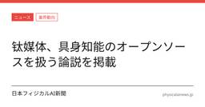
钛媒体、具身知能のオープンソースを扱う論説を掲載
日本フィジカルAI新聞
钛媒体は2026年7月29日、具身知能のオープンソースを扱う論説を掲載した。確認できるのは論説の掲載であり、技術の採用や商業化の実績ではない。評価には、公開内容と実環境での稼働実績を分けて見る必要がある。
7時間前

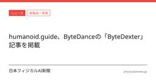
humanoid.guide、ByteDanceの「ByteDexter」記事を掲載
日本フィジカルAI新聞
humanoid.guideが「Welcome, ByteDexter!」と題する記事を掲載した。記事はByteDance Seedのロボットハンドを扱っている。公式発表や一次資料による裏付けは、今回の提供情報にはない。
8時間前
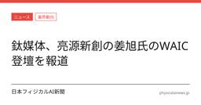
鈦媒体、亮源新創の姜旭氏のWAIC登壇を報道
日本フィジカルAI新聞
鈦媒体が亮源新創の姜旭氏を扱う記事を掲載した。記事は、姜氏のWAICでの公開発信を報じるものだ。記事の掲載だけでは、ロボットの実機性能や導入実績は確認できない。
11時間前
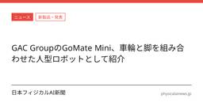
GAC GroupのGoMate Mini、車輪と脚を組み合わせた人型ロボットとして紹介
日本フィジカルAI新聞
humanoid.guideが2026年11月7日、GAC Groupの人型ロボットGoMate Miniを紹介した。高さ170cm、重量60kgで、車輪を使う移動と手作業を組み合わせる設計だ。公表された仕様値や能力評価の試験条件は、記事の記載からは確認できない。
11時間前
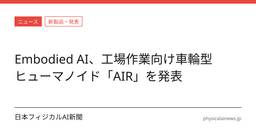
Embodied AI、工場作業向け車輪型ヒューマノイド「AIR」を発表
日本フィジカルAI新聞
Embodied AIが工場で人と作業する車輪型ヒューマノイド「AIR」を発表した。開発期間は研究からハードウェア化まで9カ月とし、腱駆動の腕と車輪による移動を採用する。作業習得には人による操作記録を使い、CEマーキングは2027年を計画する。
11時間前
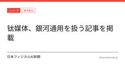
钛媒体、銀河通用を扱う記事を掲載
日本フィジカルAI新聞
钛媒体が、銀河通用を扱う記事を掲載した。本件は二次報道であり、公式発表やIRによる裏付けは提示されていない。資金面の報道と、ロボットの稼働・生産を示す情報は分けて検証する必要がある。
11時間前
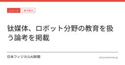
钛媒体、ロボット分野の教育を扱う論考を掲載
日本フィジカルAI新聞
钛媒体が具身商業前哨名義の論考を掲載した。記事の主題はロボット分野と教育である。論考の内容や個別の製品情報は、本稿では事実として扱わない。
13時間前
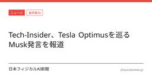
Tech-Insider、Tesla Optimusを巡るMusk発言を報道
日本フィジカルAI新聞
Tech-InsiderがTeslaのOptimusを巡るMusk発言について報じた。提示された情報には、発言の内容を確認できる一次資料は含まれていない。生産計画や注文に関する報道とは、確認できる事実の段階を分けて見る必要がある。
14時間前
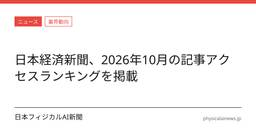
日本経済新聞、2026年10月の記事アクセスランキングを掲載
日本フィジカルAI新聞
日本経済新聞が、2026年10月に公開した記事のアクセスランキングを掲載した。ランキングは読者の閲覧状況を示すが、技術の実装や普及を直接示すものではない。本稿はランキングという編集上の動きを、技術報道の読み方から考える。
14時間前
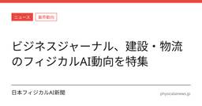
ビジネスジャーナル、建設・物流のフィジカルAI動向を特集
日本フィジカルAI新聞
ビジネスジャーナルが2026年11月7日、建設・物流分野のフィジカルAIを扱う記事を掲載した。記事はARAV、T2、Mujinなどを取り上げている。各社の進捗を評価する際は、現場稼働・車両生産・施設側の受け入れを分けて見る必要がある。
14時間前
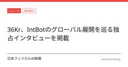
36Kr、IntBotのグローバル展開を巡る独占インタビューを掲載
日本フィジカルAI新聞
36KrがIntBotを扱う独占インタビュー記事を掲載した。記事の掲載は、同社の事業拡大やロボット導入の実績を示す公式発表ではない。本紙の既報にあるシンガポールでの応用検討と、実運用の進展は分けて見る必要がある。
15時間前
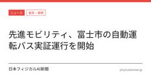
先進モビリティ、富士市の自動運転バス実証運行を開始
日本フィジカルAI新聞
先進モビリティは、静岡県富士市の自動運転バス実証運行に参画し、2026年11月6日に運行を開始した。11月15日まで、新富士駅―富士駅間を運行し、土日は田子の浦港への区間も加える。運行は自動運転レベル2で、信号連携を含む技術・運用面を検証する。
20時間前
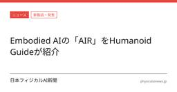
Embodied AIの「AIR」をHumanoid Guideが紹介
日本フィジカルAI新聞
Humanoid GuideがEmbodied AIの車輪型ヒューマノイド「AIR」を紹介した。本稿は製品紹介記事の掲載を扱う。個別仕様や評価の詳細は原典を参照されたい。
20時間前
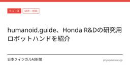
humanoid.guide、Honda R&Dの研究用ロボットハンドを紹介
日本フィジカルAI新聞
humanoid.guideが「Honda Hand」を紹介した。提供された情報は二次報道で、公式資料は含まれていない。評価方法や実機性能を確認できる一次情報は示されていない。
21時間前
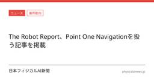
The Robot Report、Point One Navigationを扱う記事を掲載
日本フィジカルAI新聞
The Robot ReportがPoint One Navigationを扱う記事を掲載した。記事はGPS精度とロボティクス・プラットフォームを題材としている。提供された抜粋には、技術仕様や性能値は示されていない。
21時間前
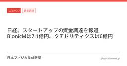
日経、スタートアップの資金調達を報道 BionicMは7.1億円、クアドリティクスは6億円
日本フィジカルAI新聞
日本経済新聞は2026年11月7日、スタートアップの資金調達案件をまとめ、BionicMとクアドリティクスの調達を掲載した。BionicMはシリーズBで7.1億円を調達し、2027年に米国投入を予定するパワード義足「ASISTA」の生産・販売基盤を強化する。クアドリティクスは6億円を調達し、心拍変動解析や発作兆候検知の開発、事業基盤の整備に充てる。
21時間前
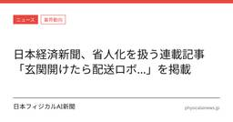
日本経済新聞、省人化を扱う連載記事「玄関開けたら配送ロボ…」を掲載
日本フィジカルAI新聞
日本経済新聞が省人化をテーマにした連載記事を掲載した。記事タイトルは配送ロボットと自動運転バスを取り上げている。提供された情報からは、具体的な事例や運用条件は確認できない。
21時間前
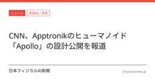
CNN、Apptronikのヒューマノイド「Apollo」の設計公開を報道
日本フィジカルAI新聞
CNNがApptronikの「Apollo」の設計公開を報じた。記事は2023年8月23日付。設計公開の報道と、技能獲得や量産の実証は区別して読む必要がある。
21時間前
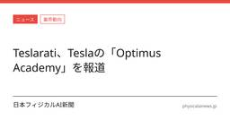
Teslarati、Teslaの「Optimus Academy」を報道
日本フィジカルAI新聞
Teslaの「Optimus Academy」を巡る記事を、teslarati.comが掲載した。提示されたソースに公式発表やIRは含まれていない。報道内容と、実際の生産・運用実績は分けて確認する必要がある。
21時間前
Forbes、AmazonとBoston Globe関係者のロボット対談記事を掲載
日本フィジカルAI新聞
Forbesが2026年11月6日、ロボットをテーマにした対談記事を掲載した。記事の登場者はAmazonのTye BradyとBoston GlobeのAaron Pressmanだ。媒体記事の掲載であり、Amazonによる新たなロボット発表を示すものではない。
21時間前
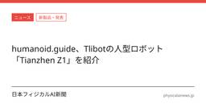
humanoid.guide、Tlibotの人型ロボット「Tianzhen Z1」を紹介
日本フィジカルAI新聞
humanoid.guideが2026年11月6日、Tlibotの人型ロボット「Tianzhen Z1」を紹介した。同記事は身長167cm、重量45kg、最大40の可動自由度（手を除く）などを掲載した。紹介記事で示された仕様であり、メーカーの一次資料による確認はできていない。
1日前
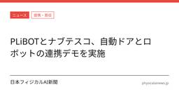
PLiBOTとナブテスコ、自動ドアとロボットの連携デモを実施
日本フィジカルAI新聞
PLiBOTとナブテスコは、ロボットと自動ドアを連携させるデモを実施する。会場は2026年11月16日から20日まで開催するプライベートショールーム。提示された情報では、使用するロボットや連携の具体的な方式は示されていない。
1日前
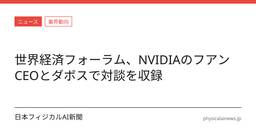
世界経済フォーラム、NVIDIAのフアンCEOとダボスで対談を収録
日本フィジカルAI新聞
世界経済フォーラムは、2026年ダボス年次総会でNVIDIAのジェンスン・フアンCEOらとの対談を収録した。今回確認できるのは対談の開催・収録に関する情報で、発言の内容は記載しない。本紙の関連報道では、計算基盤、学習データ、ロボット操作が別々の具体的な課題として現れている。
1日前
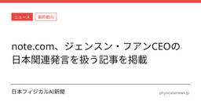
note.com、ジェンスン・フアンCEOの日本関連発言を扱う記事を掲載
日本フィジカルAI新聞
note.comが、NVIDIAのジェンスン・フアンCEOによる日本関連発言を扱う記事を掲載した。提供された資料に一次情報は含まれていない。本紙関連記事にある製造・データ・計算基盤の動きとの関係を限定的に整理する。
1日前
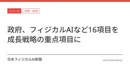
政府、フィジカルAIなど16項目を成長戦略の重点項目に
日本フィジカルAI新聞
日本成長戦略会議は11月6日、成長戦略の実行に向けた重点項目を確認した。フィジカルAIや自動運転技術など、計16項目を位置づける。報道された情報からは、個別施策や予算、実行時期は読み取れない。
1日前
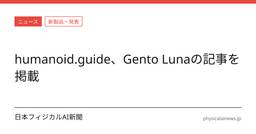
humanoid.guide、Gento Lunaを紹介
日本フィジカルAI新聞
humanoid.guideは、Gento Roboticsの車輪式人型ロボット「Luna」を紹介する記事を掲載した。
1日前
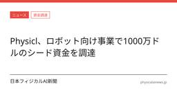
Physicl、ロボット向け事業で1000万ドルのシード資金を調達
日本フィジカルAI新聞
Physiclがシード資金として1000万ドルを調達した。調達を主導したのはInovia Capitalだ。資金調達の事実だけでは、技術の有効性や事業の進捗は判断できない。
1日前